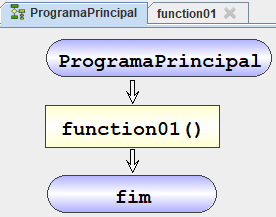
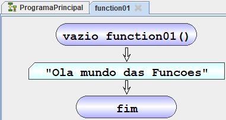
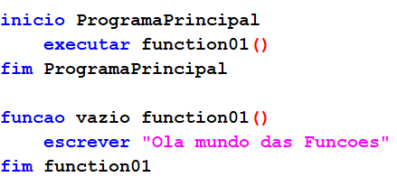
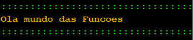

Funções
As funções no algorithmi funcionam como sub algoritmos que podem ser evocadas dentro das instruções.
| Fluxograma | PT-pt |
|---|---|
 |
Funcao < tipo> < nome>([,..,]) < instruçoes> fim nome |
tipo –> tipo de cálculo executado pela função
Nome -> Nome da função sujeita ás seguintes regras:
- Não pode ser uma palavra reservada ou de outra função
- Tem de começar por uma letra (a-z ; A-Z)
- Pode conter dígitos (0-9)
- Deve ser significativo daquilo que armazena
([Parametro]) – Parâmetros da função (Opcional)
- tipo –> Tipo de dados do parâmetro
- Variaveis -> Nome do parâmetros
|  |  |  |  |
4.1.2 Função com parametros
4.1.3 Retomar um valor de uma função
4.1.4 Memoria Global
exercicios